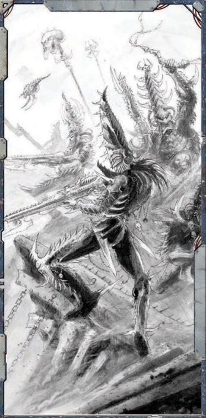

·完成逃离影脊竞技坑的准备：250成就点·获得武器藏匿点：200成就点
·每一位加入起义的著名非玩家角色盟友（如多莫斯贤者、塔恩修士、沈船长以及其他列出的潜在非玩家角色盟友）：50成就点
·每一位被羞辱或杀死的非玩家角色敌人（来自“寻找敌人”）：50成就点
经验值
当探险者结束他们在竞技坑中的时光时，他们很可能已经积累了足够终生受用的战斗经验，尽管这远未标志着他们在本冒险中磨难的结束。以下是他们在影脊竞技坑中可能经历的考验的经验值列表：
·在竞技坑中战斗：默认值50xp，即使探险者被击败也是如此；如果获胜，额外增加50xp。此外，每增加一组敌人（超出第一组）以及表2-6“竞技场险情”中每增加一项险情，探险者因参加战斗而额外获得50xp。最后，如果一场战斗包含至少一名有名有姓的敌方非玩家角色或怪物生物（怪形、血肉龙兽或克罗诺斯寄生引擎），则战斗额外获得100xp。
·获得“血中兄弟”部分中一位非玩家角色的帮助：50xp（最多150xp）
·为枯刃斗教成员或客人提供服务以获得好感度：50xp（最多200xp）
·羞辱或杀死来自“寻找敌人”的一名敌人：100xp